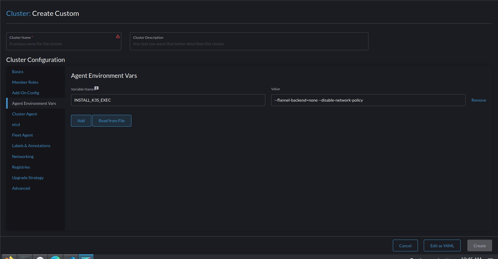

Rancher-Ops
Installing Rancher
Simply clone the repository at https://github.com/moonpiedumplings/rancher-ops
cd rancher-ops/docker
docker-compose up. Or alternatively, docker compose up
Then, rancher will be available at yourip:444. The ip you access rancher from is important, as it notes this and uses this ip to point things it controls, so don’t access it from localhost:444 or nonpublicvlan:444 or the like.
I have set the default password to “password”, although you can change it in the docker-compose.yml file.
K3s.
I can’t get RKE2 clusters working, so I am going with K3 clusters instead. You can create K3s clusters from the UI.
For our use case, we will be creating externally managed clusters:
In the rancher UI, create cluster > custom > and then change the kubernetes version from rke2 to k3s.
If you want K3s to have nvidia container runtime support, follow the insutrctions in that section below. Nodes must be set up that way before k3s is installed on them.
NetworkManager
If your systems are using networkmanager, like my virtual machines are, then you need to add some things to make sure that networkmanager does not get in the way of the k3s/rke2 managed interfaces:
Installing Nvidia container runtime.
K3s have a feature where they automatically detect and enable Nvidia container runtime if it is installed, which makes things simple.
Linked on the K3s website, is the nvidia website, which then links to a guide to install the nvidia container runtime.
I followed the guide from docker to sudo apt-get update.
After that, I decided to follow the steps on the K3s page.
apt install -y nvidia-container-runtime cuda-drivers-fabricmanager-535 nvidia-headless-535-serverReplace “535” with whatever version of the nvidia driver you want to install.
And sure enough, when I run the command recommended by the k3s to check if the nvidia container runtime installed, it is.
root@ubuntu:/var/lib/rancher/k3s/agent/etc/containerd# grep nvidia /var/lib/rancher/k3s/agent/etc/containerd/config.toml
[plugins."io.containerd.grpc.v1.cri".containerd.runtimes."nvidia"]
[plugins."io.containerd.grpc.v1.cri".containerd.runtimes."nvidia".options]
BinaryName = "/usr/bin/nvidia-container-runtime"Of course, the fabricmanager service dies, complaining about not being able to find an nvidia gpu, but that make sense, because this virtual machine has no gpu.
Calico Networking
Installing K3s without flannel
Because vcluster needs calico networking, rather than the flannel that k3s offers by default, we need to make some changes to the installation process.
In the UI for the installation, select agent environment variables, and set them like so:

Here is some code blocks that are copyable with one click, to make it easy:
INSTALL_K3S_EXEC--flannel-backend=none --disable-network-policyThese wil set the necessary environment variable for the k3 installer that prevent it from installing flannel.
I also recommend adding the environment variables listed in the setting up kubectl section of this document.
Installing Calico to a k3s cluster
The process is fairly simple, and the steps can be found on calico’s docs
Ensure that you follow the manifest steps, the one with kubectl apply, because in my testing, using the operator steps will cause the cluster to perpetually hang on “waiting for cluster agent to connect” in rancher.
The current command for this step is:
kubectl apply -f https://raw.githubusercontent.com/projectcalico/calico/v3.26.1/manifests/calico.yamlTwo things should be noted, if you are trying to automate this:
- You can’t run kubectl in the same bash session as you run the install command, as the way it adds itself to path only takes effect after you reload or load a new bash shell
- The kubernetes cluster takes a few seconds before it is ready to have kubectl ran against it. Commands ran earlier than that will fail.
And now calico is installed and running. When everything is setup, rancher should be able to see the K3s cluster, and do management operations on it.
Setting up Kubectl to work without sudo
While not strictly needed, using these agent environment variables:
K3S_KUBECONFIG_MODE644Will enable kubecttl to run without needing sudo, if you are directly accessing one of the controller nodes on the cluster (k3s add kubectl and related tools to your path)
Vcluster
To install vcluster on a system with kubectl configured and pointed at your specific cluster, simply follow the vcluster docs.
To create a vcluster, use vcluster create clustername --connect=false. This will prevent vcluster from creating and running a new proxy process which kubectl will try to connect to.
To list vclusters, vcluster list
To connect to a vcluster, use vcluster connect clusternmae -n <optionalnamespace> -- bash. This creates a new bash shell with the kubectl context switched to that vcluster. exit to exit.
Kata Containers
These steps for installing kata-containers were gotten from the kata docs, here, and here
You have to run the kubectl steps here only once for the whole cluster.
git clone https://github.com/kata-containers/kata-containers.gitcd kata-containers/tools/packaging/kata-deploykubectl apply -f kata-rbac/base/kata-rbac.yamlkubectl apply -k kata-deploy/overlays/k3skubectl apply -f https://raw.githubusercontent.com/kata-containers/kata-containers/main/tools/packaging/kata-deploy/runtimeclasses/kata-runtimeClasses.yamlHowever, you must restart k3s on each node, or maybe just reboot all the nodes at once in order to restart k3s so that k3s is able to see that the new container runtimes are available to it.
sudo k3s-killall.shThe k3s killall script is a special script provided by k3s that does more than just stop the systemd service, although starting the systemd service is all that’s needed in order for k3s to restart.
sudo systemctl start k3sNow, kata containers should be usable. To run a test pod, you can run a test pod from the run a sample workload in the docs.
For example, to run a test apache pod with the kata-qemu runtime:
kubectl apply -f https://raw.githubusercontent.com/kata-containers/kata-containers/main/tools/packaging/kata-deploy/examples/test-deploy-kata-qemu.yaml